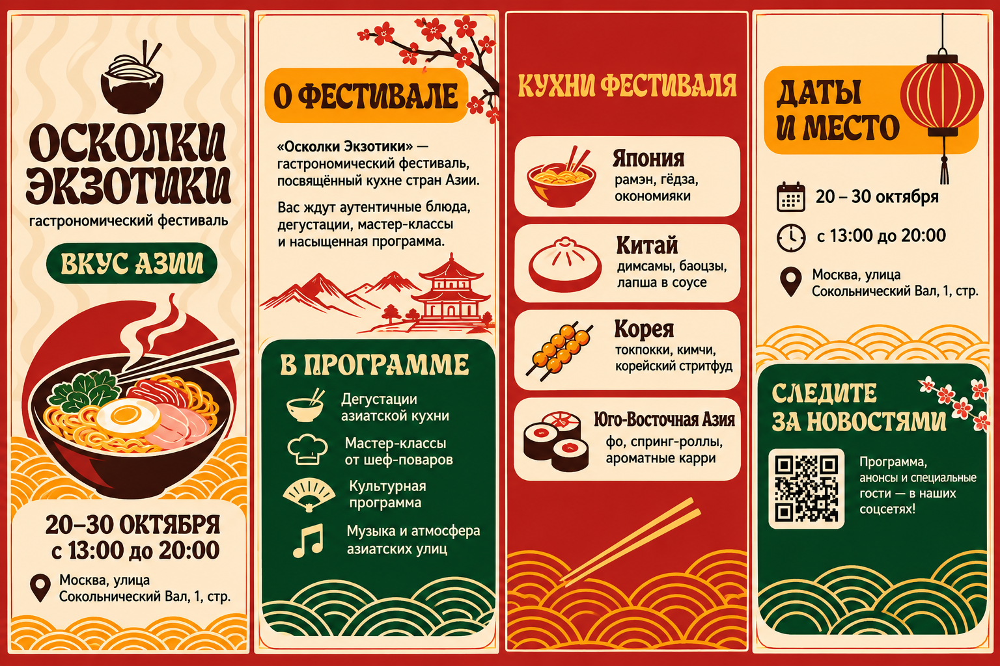
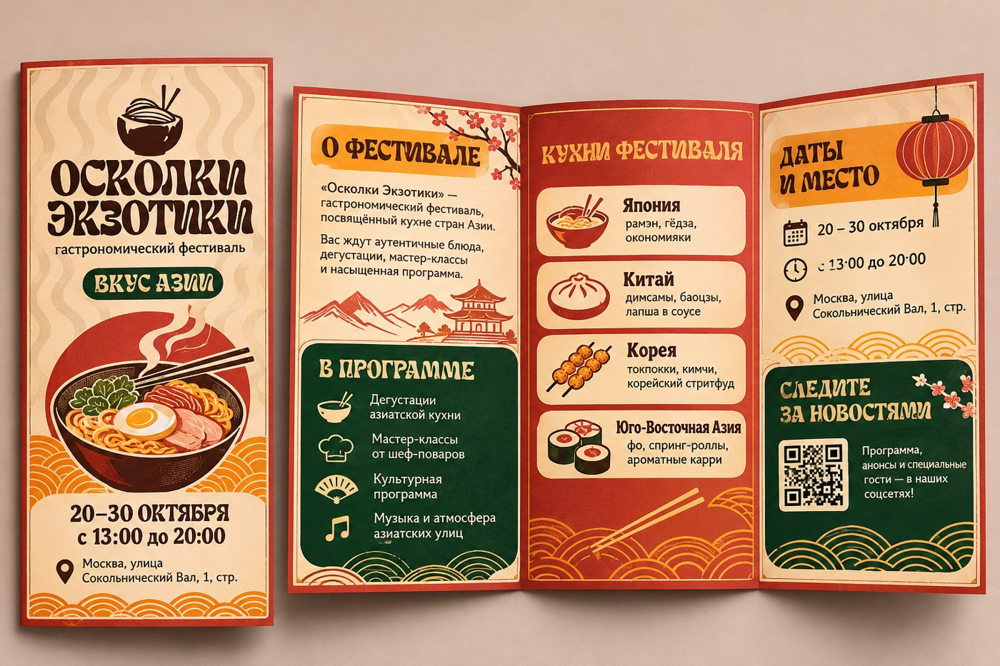
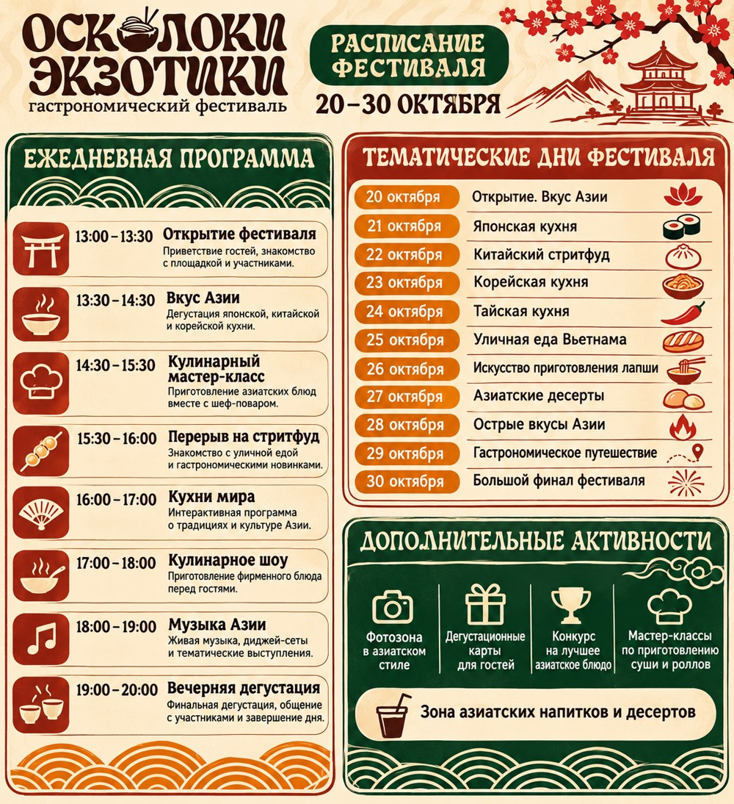
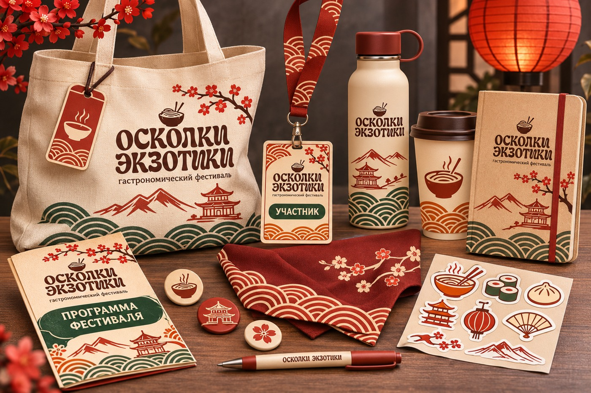
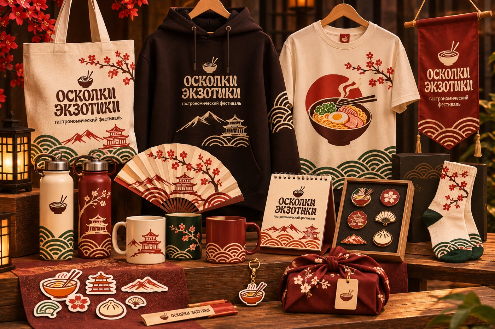

03 / EVENT IDENTITY & EDITORIAL
ОСКОЛКИ
ЭКЗОТИКИ✳
Фирменный стиль гастрономического фестиваля, объединяющего вкусы и кулинарные традиции стран Азии.

Разные культуры.
Один общий стол.
«Осколки экзотики» — гастрономический фестиваль, посвящённый разнообразию азиатской кухни, кулинарным традициям и культуре разных стран Азии. В одном пространстве встречаются национальные блюда, необычные вкусы, ароматы и современные гастрономические направления.
Основой визуальной идентичности стал образ разбитой керамической миски с лапшой. Её фрагменты символизируют многообразие традиций, вкусов и национальных блюд, которые складываются в общую гастрономическую картину.
Мозаика вкусов
и культур Азии
Восточная эстетика
с современным ритмом.
Графическая система объединяет декоративную типографику, волнообразные паттерны и иллюстрации, связанные с гастрономией и культурой Азии. В композициях используются миска с лапшой, палочки, цветущая ветвь, пагода, горный пейзаж и мотивы волн.
Палитра построена на сочетании тёплого кремового, глубокого красного, оранжевого, горчичного, тёмно-зелёного и коричневого. Контрастные цветовые поля помогают выделять информацию и сохранять цельность разных носителей.

Основные графические элементы и фирменная композиция
Вся информация
на одной полосе.
Для гостей разработана информационная брошюра с описанием фестиваля, программой, направлениями кухонь и практической информацией о датах и месте проведения. Отдельный расписной постер структурирует ежедневную программу и тематические дни.


Фестиваль — это
опыт целиком.
Набор участника объединяет сумку-шопер, бейдж и ленту, многоразовую бутылку, стакан, блокнот, программу, стикеры и значки. На каждом предмете повторяются фирменные символы, цветовые сочетания и декоративные мотивы фестиваля.

Набор участника / Participant kit
Воспоминания,
которые остаются.
Сувенирная линейка расширяет визуальную систему за пределы фестивальной площадки. В неё вошли одежда, шоперы, термосы, кружки, веера, календарь, значки, брелоки и декоративные аксессуары.

Сувенирная линейка фестиваля
ИТОГ ПРОЕКТА
Одна идея.
Много оттенков.
Разработана целостная система фирменного стиля гастрономического фестиваля: логотип и графические элементы, цветовая и шрифтовая системы, рекламная афиша, информационная брошюра, программа мероприятий, навигация, карта территории, набор участника и сувенирная продукция. Все носители объединены общей визуальной концепцией и передают идею многообразия азиатской гастрономии.